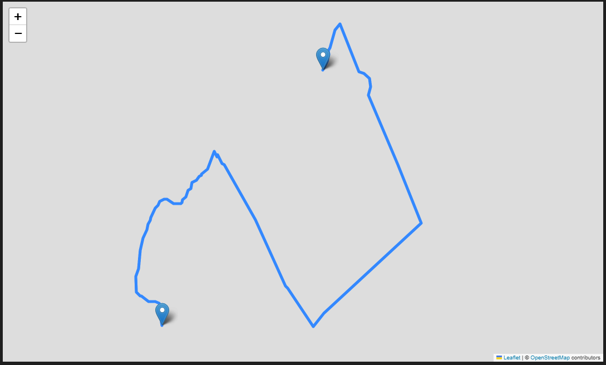
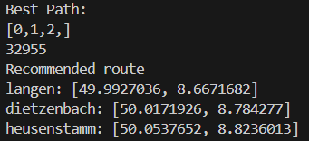

Travel Route Planner
Completed: 04/12/2025
In this project I built a tool that finds the shortest route for visiting all declared spots. It gives you the order that would be the best for having a minimal travelling distance or duration.
 Technologies Used
- Python
- Geopy
- Routingpy
Key Features
- Fetching coordinats
- Fetching travelling distance/durations
- Finding shortest (least weight) Hamiltonian path
Learnings
In this project i ran into an NP-Hard problem. I learnd to make a compromis, and had to except that there wouldn't be an efficant solution. But nevertheless this project gave me the chance to learn more about data structures and algorithms like Dijkstra and Bellmann-Ford. I also learned and practised recursion and improved my python skills.